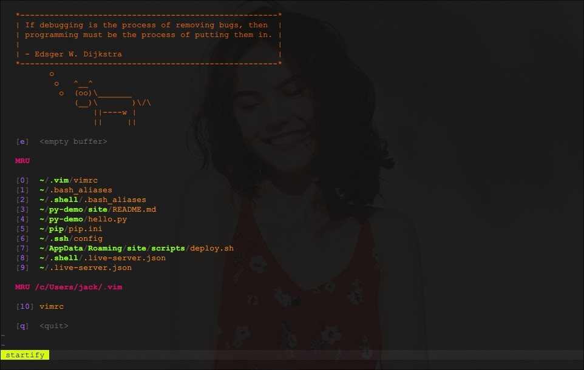

Vim 是 Vi 的升级版，一款功能强大、高度可定制的文本编辑器，它只有一个对手 – Emacs 。那么，它来自哪里？
Vim 123
说起 Vi ，就不得不提起这们大佬 – Bill Joy。除了 Vi ，他还创建了 BSD 和 Sun ，Ok，大佬就是大佬。
2003年9月9日，乔伊离开Sun公司，Sun发言人除了宣布Joy辞职的消息外，不愿意发表其他评论。从一些迹象看来，他很关注机器人、纳米、基因工程等可能会改变全人类未来生存发展的技术；更加关注科技带来的道德问题: 如何不让科技成为一个国家、政府、集体、甚至个人做恶的工具？
基础
Vim 好学吗？好学，先来个速成 Y 分钟学习 Vim 。另外，附上关注的一挺有趣的视频 VIM 使用技巧系列 。其实，一张图足矣，重要的是使用和练习。

如果，以前没有接触过 Vim/Vi ，初次使用的时候大概率会很迷惑，这再正常不过了。
安装
去官网下载对应版本安装即可，乌干达 forever …… ⁉️
我们这里只针对 CLI ，Vim 谁用 GUI ？那玩意没有灵魂… 如果，你是在 Windows 下（常用工作环境），建议使用 git-bash ，安装了 Git 之后自带，内置已经安装好了 Vim。
模式
Vim 编辑器基于 模式 这个概念。它有以下 4 种模式：
- 命令模式：启动后处于这个模式，用于导航和操作命令；
- 插入模式：用于在文件中进行修改和编辑（同常规文本编辑器，如 NotePad 😺）；
- 可视模式：用于高亮文本并对它们进行操作（就是选择文字内容，进行复制粘贴之类的）；
- Ex 模式（底线命令模式）：用于跳到底部的
:提示行上输入命令。
在命令模式下，我们使用 HJKL 进行光标移动，为什么不直接使用 ←↓↑→ 方向键呢？原来，当前 Bill Joy 在开发 Vi 编辑器时所使用的计算机是一个被称为 ADM-3A 的终端，该终端附带的 HJKL 键本就和方向键同位一体，根本就没有独立的方向键。
配置
Vim 是高度可定制的，而你只需要一个配置文件 .vimrc ，它位于家目录下面，GNU/Linux 上就是 ~ ，Windows 上为 /c/Users/<用户名>。为了便于管理，我们一般会把 .vimrc 命名为 vimrc 放于文件夹 .vim 中，然后把该文件夹置于家目录。如下：
.vim
├── autoload
│ └── plug.vim
├── plugged
│ ├── delimitmate
│ ├── molokai
│ ├── vim-airline
│ ├── vim-markdown
│ ├── vim-startify
│ └── vim-surround
├── README.md
└── vimrc
上边这个目录图是在 Linux 下，由
tree命令生成的，确切的说是tree -L 2，其中2是指定的展开的目录层级。不是手画的，不是手画的，曾经手画过……
我自己的 Vim 配置是很简单的，因为平时使用 Emacs 😅 。Vim 有多种不同的插件管理工具，如 Vundle、NeoBundle、VimPlug 和 Pathogen 等，我使用的是 VimPlug ，小巧、稳定而强大。这里，我们推荐一个神奇的插件库 VimAwesome ，速度快、视图怡人。
最后，再放一张简单配置后的图片吧。
预祝大家使用愉快，最后欢迎加入 Vim 和 Emacs 之间旷日持久的圣战，虽然没什么用 😏 。
更多
所有类 Unix 的系统中的工具，基本上都配备了一个不错的帮助系统，Vim 自然也不例外。安装完成之后，可以在终端执行 vimtutor 打开一个内置的入门教程，默认是英文，当然你可以通过执行 vimtutor zh 打开对应的中文教程。
*记住，你总是可以通过 vim --help 来获取更多的帮助。
文件
编辑器是用来编辑文件的，自然最先接触的就是如何新建、打开、更新及保存文件。
1.打开、新建
不妨假设，我们在文件夹 ~/demo 中，想要打开该文件夹中的文件 a ，只需要执行 vim a 即可。也可以同时打开多个文件，如 vim a b c 同时打开文件 a、b、c 。（若有，则打开文件，若没有，则创建一个新的文件。）
.
├── a
└── b
0 directories, 2 files
同时打开多文件时，默认只会显示第一个文件的 buffer ，可以使用以下命令，多窗展示，如下：
vim -o a b c # 窗口在一行
vim -O a b c # 窗口在一列
2. 更新、保存
打开文件后，进入插入模式，就可以编辑文本了，完成之后使用 ：
:w保存当前文件；:wq或是<S-z S-z>保存并退出。
我们使用
<C、S、M/A->表示Ctrl、Shift和Meta/Alt键。
3. 展示、切换
当我们编辑多文件时，很多时候避免不了在文件之间进行切换，当然也免不了需要打印出当前所有打开文件的列表。该如何做呢？（其实，这些常规操作才是 Vim 的魅力所在）
在 Vim 中，我们可以通过 :ls 来展示当前所有打开的文件列表，如下：
其中 %a 表示当前激活的 buffer ，可以通过 :bn （buffer next）切换到下一个 buffer ，通过 :bp （buffer previous）切换到上一个 buffer 。
文件过多了，也是繁琐，怎么办？
可以通过 :e xxx 打开你想要的文件，但如果文件名 xxx 太长了，也很困扰。有一种更好的文件，如上图中所示，所有打开的文件都会被分配一个 id 号，我们可以通过 :buffer id 来进行直接切换到相应 buffer 。
窗口
多窗口编辑是很常见的，窗口的新建、切换、关闭也是最常用到的操作之一。
| 命令 | 描述 |
|---|---|
:sp |
横向分屏（即窗口横向排列） |
:vsp |
纵向分屏（即窗口纵向排列） |
:wincmd w |
窗口切换 |
:close |
关闭当前窗口 |
:only |
关闭所有其他窗口 |
:q |
退出当前窗口 |
当然，还有一些快捷键可以用，也很方便。这个请自行了解，因为我平时也不怎么用这些快捷键，也不大记的住。
快捷键
关于快捷键，我们这里来单开一个章节来说明一下，之前也写过这方面的一些东西，如 VSCode 插件 CVE Keymap 的开发记录 和 键位映射那些事儿 。这里，我们着重说明一下，在 Vim 中如何方便的设计自己的键位映射。
在 Vim 中有个神奇的好东西，就是 <leader> ，强烈建议使用它来自定义你的键位。使用 Emacs 的过程中，离不开 Evil 插件的原因，很大程度上也是为了这个 <leader> 。
Vim 中在各种模式间进行切换的时候，会频繁使用到 <Esc> 这个按键，它一般分布在键盘的左上角，很容易找到。也可以使用 <C-[> ，它与 <Esc> 是等效的。很多朋友，也会把 ,, 映射成 <Esc> ，看你爱好。
我个人是使用 SharpKeys 软件（Windows 系统），直接把键盘上的右 Shift 键映射成了 Esc ，如此全局通用。
如果，你使用的是 GNU/Linux ，可以方便地使用 Xmodmap 进行全局的键位映射，更多可以阅读 如何使用 Xmodmap 工具进行映射 。
OK，让我们转回 <leader> ，以下是我的一些键位映射配置：
我把 <space> 空格键设置成了 <leader> 键，默认是 \ 。如上图所示，我们用它实现了，上个章节中常用的文件及窗口操作。它有很多好处，方便记忆（毕竟是你自己设置的），还可以组合命令。如，我们使用 <Space> jj 就可以先展示打开的文件列表，然后再供你输入想要跳转的 buffer 。
更多配置，可以阅读我的 Vim 配置 。
结语
我自用的 Vim ，配置的是很简单的，使用的功能也远不及 Vim 所拥有功能的千分之一。如果感兴趣的话，不妨自己去亲自折腾一下。Come on 🏃♂️ ！